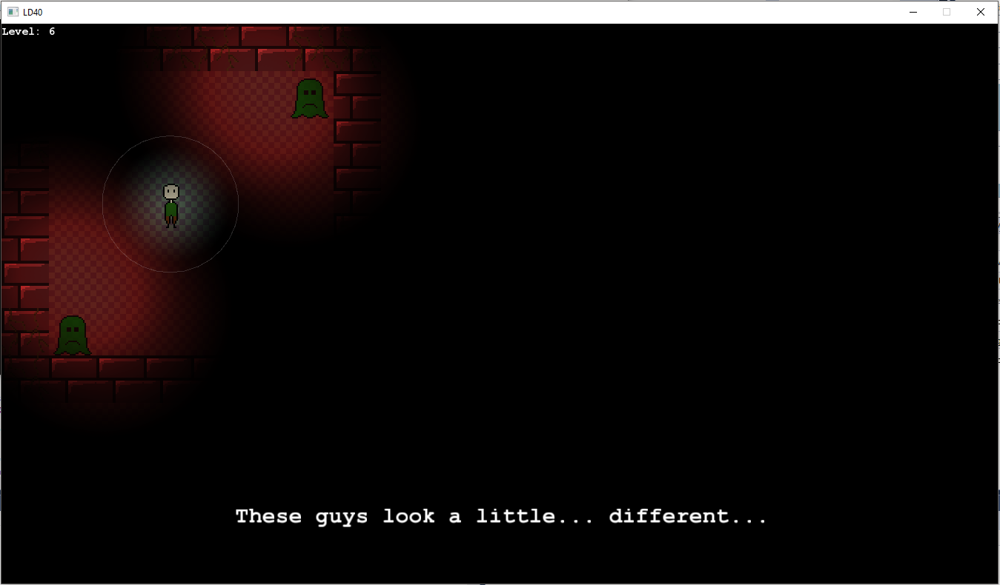
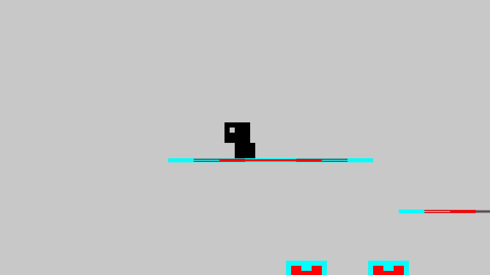

This weekend I participated in yet another Ludum Dare (I'm starting to lose count!). The theme this time around was "combine two incompatible genres."
To be honest, I wasn't, and still am not, the biggest fan of the theme. I think the premise of the theme undermines the quality of some of the games I've played and my own game.
This was definitely the hardest Ludum Dare I've participated in yet, theme-wise, but also motivation-wise. I've been very busy, pretty much since the last game jam, and I haven't had a weekend in months to rest. On top of my exhaustion, my idea was pretty mediocre, and I knew a few hours into programming that the game would be average at best, and probably not very fun.
Nonetheless, I am proud that I finished another game -- that's the whole point of the Ludum Dare! And some of the games I've been playing on the site are exceptional. This weekend has once again spurred my interest in game programming, and I even have an idea that I'll hopefully be pursuing over the next few weeks.
Additionally, I'm very happy with the music that I produced this weekend, and I think it is the biggest strength of the game. I might pull the little riffs from the project and develop them further as well.
The link to the repository is here, but fair warning, it is probably the worst code I've ever written, so please don't judge me too harshly! I was in a hurry to get it done, and I just didn't have the passion for the project that I normally do to make the code look nice and to make it efficient.
And here's a bonus -- I recorded my process this weekend and made it into a timelapse! The video isn't the highest of quality, but it was my first time doing it. Hopefully in the future they'll be better, but it's still cool to watch (I think).
Radial Gradient Sort -- January 3 2018
ben-humphries.github.io/projects.html#radial-sort
This week I decided to take a break from game programming, which has been my main focus for a while now. Inspired by pixlark's Sorting Algorithm Visualization, I decided to make one of my own, with a personal touch.
In the examples below, the algorithms are sorting 500 numbers, each represented as a color in the color wheel. This is done in SFML using a TriangleFan object that, with enough triangles, looks like a circle.
These are only two of the algorithms implemented, Merge Sort and Quick Sort (I think they look the coolest).
The rest are:
Selection Sort
Bubble Sort
Insertion Sort
Shell Sort
Cycle Sort
Pancake Sort
Cocktail Sort
If you want to see the project, it's a single .cpp file here.
LD40 Ethereal -- December 3 2017
ben-humphries.github.io/projects.html#ld-40
Ethereal is a game where the more light there is, the worse it gets. You play as a poor soul lost in a dark maze, trying to find his way out whilst avoiding ghouls.
Navigate by increasing the intensity of your light, but beware of light-sensitive enemies. If you retract fast enough, you might just get away.

Ethereal was my first Ludum Dare game that wasn't made in Unity, and boy, it was a lot of fun. The theme was "the more you have, the worse it gets" and my take on it was light. To progress through the levels, you have to increase the brightness of your light, but there is a trade-off: the brighter your light, the more ghosts you wake.
I used a lot of similar techniques from Playground to implement things like collision and animation quickly so I could get to the game-making faster. One of the coolest things about Ethereal, and one of the most useful, is the level-loading system. It's different from Playground's, using .png images as levels instead of text files, to make creating them easier (no time for a level-editor in a 48 hour game jam!). Because of my level loading class I was able to make 18 different levels! It's amazing compared to my 3 levels in Ludum Dare 34.
The feedback for the game has been very positive so far. There were some things that people didn't like (like the scrolling background) but overall, I think it is the best game I've made. Watching my friends play it in real life, it's just great to see them jump when they get scared! I never thought a 2D game could scare someone like that!
If you want to look at the source code, here it is.
If you want to play the game and look at the ratings, you can do that here.
Playground -- November 26 2017
ben-humphries.github.io/projects.html#playground
Playground is one of the most ambitious projects I've worked on yet: a framework for my future 2D games in SFML. I've implemented animation, level loading and saving, collisions, and other less interesting stuff. I'm still working on this project, but it is suspended right now because I was interrupted by Ludum Dare 40.

One other cool thing that I'm messing with is the possibility of using shaders in future games. Here's an example of a simple fragment shader:
This is just a demo state where I'm trying out different things I've implemented. I hope to be able to use this framework to make many more (playable) games in the future!
Also, the little character I drew is definitely going to be in a future game. He's so adorable! There's definitely potential there.
There is a link to the repository here if you want to check it out and/or contribute!
Welcome to part 2 of Asteroid Evaders! It is the season of remakes for me! This project started as a way to gain more experience with SFML in a familiar environment, and spiraled into a pit of unreadable, messy code, and implementing new cool stuff while ignoring the unreadable, messy code.
Obviously, there are problems with this project. You may be able to see from the gif that there isn't a death condition for the player, there are no green asteroids, so the game is basically un-losable, and the asteroid sprite looks like a charred meatball.
The first game is definitely a lot more fun, but this one gave me the opportunity to make a game from the ground up in C++ and mess with some new concepts like lighting and collision. I think my first game made without Unity is pretty good, although the first one is definitely more fun.
Here is a link to the github repository for the the project if you want to check it out!
Welcome to part 2 of Conway's Game of Life. I recreated my favorite cellular automaton in C++ this time, using SFML. Using C++, I was able to make big strides in performance by storing and accessing tile states more easily and at relevant times. I also implemented a zoom feature as part of a little SFML exercise since this was my first project with it.
I plan to put the project on Github soon, but until then you'll just have to admire the gif of Game of Life in action!
Here is a link to the github repository for the the old project. Hopefully the new one will be up soon!
I've always been fascinated by Conway's Game of Life, a simple "game" in a grid that is dictated by four basic rules:
Any live cell with fewer than two live neighbours dies, as if caused by underpopulation.
Any live cell with two or three live neighbours lives on to the next generation.
Any live cell with more than three live neighbours dies, as if by overpopulation.
Any dead cell with exactly three live neighbours becomes a live cell, as if by reproduction.
I decided to recreate my own version of Game of Life to tinker with, so I used Processing (which gave me pretty simple graphics control) to make it. So far the project consists of an on/off toggle and the ability to draw alive and dead cells. Soon I hope to implement a save feature (using .csv files) and maybe even adjustable variables to change the rules of the game.
Edit: The save and open feature is now implemented! I did this by saving the grid as a .csv file, plus adding a bunch of tedious UI and string splicing. After adjustable variables I will finally have a good program to tinker with for hours on end!
Here is a link to the github repository for the project.
This website is another project inspired by pixlark who first informed me that it was possible to host a website through Github. I saw this as a great opportunity to document my work and learn some HTML and CSS while doing it, so I've made this simple website to store information about all of my projects, music, blog posts, and code snippets/tutorials on some of the more unique coding strategies I've used.
If you want to see the newbie HTML that this site is made of, here is the link to the repository.
My custom Google Chrome New Tab Page was inspired by pixlark, who originally showed me his own custom New Tab Page. I started out by finding basic resources on how to set up an extension that could override Chrome's default New Tab Page. Once I had the .json file ready, I headed into Chrome Extensions and enabled my extension through developer mode. This allowed me to associate a directory on my computer to the New Tab Page. After that, with the help of pixlark, I learned basic HTML and CSS which eventually culminated in a fancy New Tab Page:
A link to the github repository for the project is here if you want to clone it and customize it for yourself or see the source code.
FRC stands for First Robotics Competition, and it is a world-wide organization that hosts annual robotics challenges. Each year involves building a robot, and programming it. You can find my team's git repository here. Since we only have six weeks to plan, build, and practice with our robot, our drivers are often under-practiced by the time competition comes. To help solve this problem, and to help determine who our drivers will be, I created a simulation that uses the same joysticks or controllers that we use during competitions to emulate what driving the robot is like. With the help of a friend, Vincent Wang, I inserted 3D models of this year's competition field and a model robot. In addition to that, I included some obstacle courses for practice. I hope to expand the simulation into Virtual Reality as I have access to VR equipment.
Here is a link to the repository if you want to try out the simulation or use it for your own robotics team. Joysticks recommended (and kinda required)!
Asteroid Evaders was a small project I worked on in order to re-familiarize myself with Unity before starting on the FRC Driving Simulation. It's a small game where you control a spaceship and shoot/dodge asteroids flying past you in order to gain points. Green asteroids give you more points, but reflect your shots back at you at twice the normal speed. Incidentally, combining this mechanic with a growing number of green asteroids (proportional to your score) created a pretty well-balanced game. Some friends discovered a glitch where you get points if two asteroids collide together, but I had already uploaded the game, so I just left it in. Oh well.
If you want to play the game, check it out here. You can play it in the browser, or download a windows .exe.
LD37 Through the Window -- December 10 2016
ben-humphries.github.io/projects.html#ld-37
Through the Window was a puzzle game that I made for Ludum Dare 37, themed "One Room." I wouldn't say it's my proudest project, as I spent about half of the weekend changing my mind about what I wanted to do and how I wanted to implement it, but nonetheless, it's available for download and to play on itch.io.
As a small project, I created a little asset for Unity that allows using a .png file to denote different GameObjects using different colors. The script would read from the image file and, using in-editor information that the user sets, it would instantiate an object or sprite in the correct X,Y, and Z position of the grid in world space. RGB values denoted the type of object, and the A value denoted the z layer.
I never made a repository for the project as I never really finished or polished it, but if I ever make one it will probably end up here.
A still ongoing project, I am participating in Google's Foo.bar challenge that I was (randomly, I presume) chosen to partake in one day. Each challenge level gives more time and harder questions, and since I completed the first one in late 2015, I've been working on them whenever I don't have any other projects going on.
I'll probably upload the solutions to the problems (I've saved all problems and solutions I've worked out) to github at some point, so I'll be sure to link it here when I get around to it.
LD34 Pyromaniac 3--2 -- December 2 2015
ben-humphries.github.io/projects.html#ld-34
LD34 was my first Ludum Dare (theme "Growth") aside from the Mini LD in which I created my first real game, Vroom!. I'm very proud of the game I created by myself in just 48 hours, since I was very new to Unity and game-making in general at the time. It's so old that if you try to play it in the browser it may not be supported anymore, but there's always the .exe that you can download if you want to try it out. You play as a ball of fire, trying to grow your flames until you have destroyed the entire scene, volunteer firefighers included. To my astonishment, a real firefighter reviewed my game! He said it was "a bit unnerving." If I recall correctly, there's also a 1/100 chance every time a firefighter spawns that it will be a super powerful Bono firefighter.